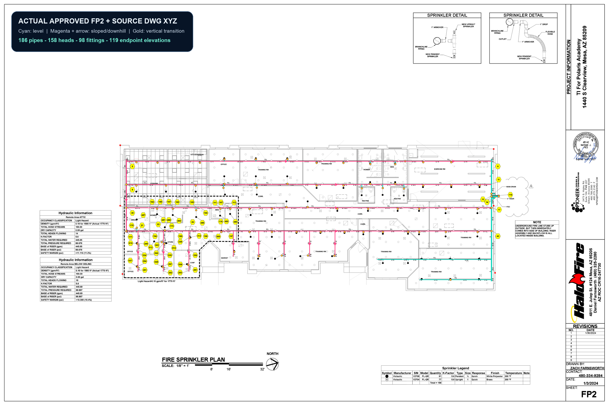

Pipe direction and grade are now separate, source-gated facts
Solid plan geometry is the exact exported AutoSPRINK pipe model registered to the approved/as-built FP2. Blue and green arrows are the hydraulic report's explicit upstream-to-downstream node graph. They are drawn between source node annotations until exact node-to-centerline binding clears. Orange/green dots mark the exact geometric downhill end of every non-level plan run.
Approved FP2 + exact pipe model + governed direction layers

Acceptance boundary
This proves the completed project's hydraulic report graph, physical pipe graph, fitting identities, fire-line source context, exact grades, test-and-drain, and main-drain destination. It does not claim that annotation-to-annotation arrows are already exact centerline bindings, that the three loop directions are resolved, or that all ten remote geometric low points require auxiliary drains. Those decisions remain fail-closed until the calculation nodes are bound to pipe spans and system/drainage intent is proven.